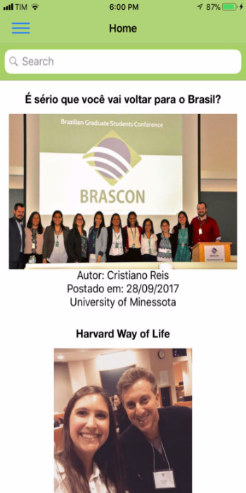

Brasinhas
O Brasinhas foi criado em Outubro de 2014 como o diário virtual da BRASA, com o intuito de informar e inspirar alunos brasileiros de Ensino Médio sobre uma possível carreira universitária e vida fora do Brasil.

BrasinhasContact Us
O Brasinhas foi criado em Outubro de 2014 como o diário virtual da BRASA, com o intuito de informar e inspirar alunos brasileiros de Ensino Médio sobre uma possível carreira universitária e vida fora do Brasil.
BrasinhasContact Us